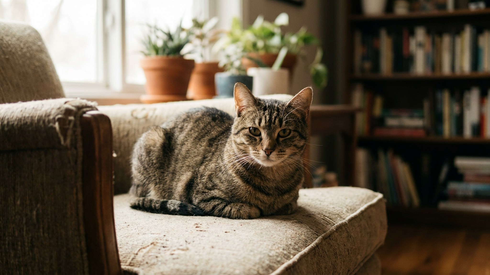

Кошка складывается в аккуратный прямоугольник: лапы спрятаны под грудь, хвост прижат к боку, взгляд полуприкрыт. Интернет называет это «батоном» или «мясным хлебом» — и смеётся. Но за этой позой стоит конкретная информация о том, как чувствует себя кошка прямо сейчас. Разберём варианты позы и научимся читать разницу между «отдыхаю» и «мне некомфортно».
🐾 Дневник здоровья питомца — в кармане
Вес, прививки, симптомы и напоминания в одном приложении. AnimaLife следит за здоровьем питомца вместо вас.
Поза батона решает сразу две задачи. Во-первых, терморегуляция: убрав лапы под тело, кошка уменьшает площадь поверхности, через которую теряется тепло. Подушечки лап — один из немногих участков тела, где у кошки нет шерсти: именно через них идёт значительная теплоотдача.
Во-вторых, «батон» — это не полное расслабление. Мышцы передних лап остаются слегка в тонусе под телом. Кошка может вскочить за долю секунды. Это принципиально отличает «батон» от позы на боку с вытянутыми лапами — там кошка отключилась полностью.
Этологи описывают «батон» как позу «настороженного покоя»: кошка отдыхает, но не выключается. Это нормальное состояние для большей части дня.
Поза не монолитная — у неё есть варианты, и каждый говорит о разном.
Кошки — теплолюбивые животные. Их комфортная температура окружающей среды выше человеческой: 30–38 °C для поверхности, на которой лежат. Поза батона активируется при температурах ниже комфортной зоны — это способ сохранить тепло без движения.
Если ваша кошка всё лето лежала вытянувшись, а с похолоданием переключилась на «батон» — она просто адаптируется к температуре. Добавьте тёплую лежанку или плед в любимом месте: скорее всего, кошка перейдёт из «батона» в расслабленную вытянутую позу, когда поверхность нагреется.
Большинство «батонов» — норма. Но есть вариант позы, который ветеринары называют «болезненным батоном», и его важно уметь отличить.
Если видите несколько из этих признаков вместе — опишите ветеринару позу, длительность и сопутствующие изменения в поведении. Поза сама по себе — не ответ на все вопросы, но ветеринару контекст поможет.
Котята сидят в «батоне» реже — у них ещё нет нужды экономить тепло и они склонны к более «открытым» позам. Классический «батон» — поведение взрослой кошки от 1 года и старше.
У пожилых кошек (10+) поза «батона» может стать более частой из-за суставного дискомфорта: удерживать лапы на весу или вытягиваться становится менее удобно. Если кошка-ветеран вдруг стала значительно больше времени проводить в «батоне» и меньше — в других позах, это хороший повод для планового осмотра.
🐾 Не уверены, что это опасно?
Опишите симптом в AnimaLife — AI-ветеринар за минуту подскажет, что в пределах нормы, а когда пора к врачу.
🐾 Понравился разбор?
Подпишитесь на канал — каждый день разбираем по одному тревожному симптому у кошек и собак: что в пределах нормы, а когда пора к врачу. Подпишитесь, чтобы не пропустить разбор, который может спасти здоровье вашего питомца.
Поза кошки — быстрый и надёжный индикатор её состояния. Выработайте привычку: раз в день бросить взгляд на позу кошки и на то, что с ней сочетается.
Наблюдение — самое мощное из доступных владельцу инструментов. Кошка не жалуется словами, но тело говорит за неё постоянно.
Материал носит информационный характер и не заменяет очную консультацию ветеринара.